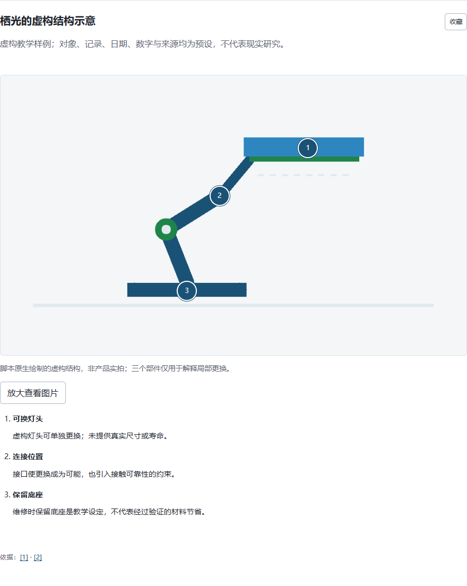
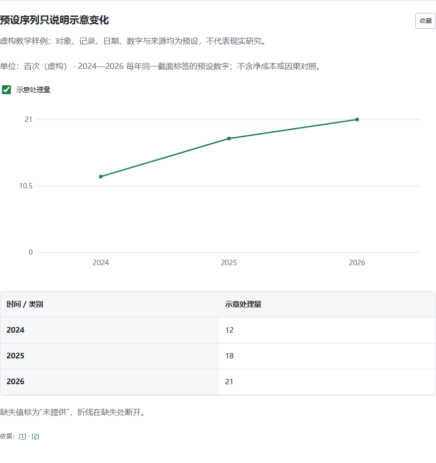
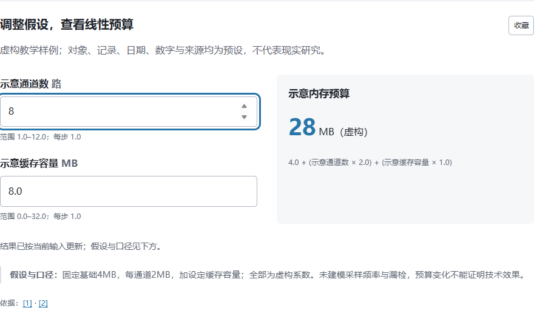
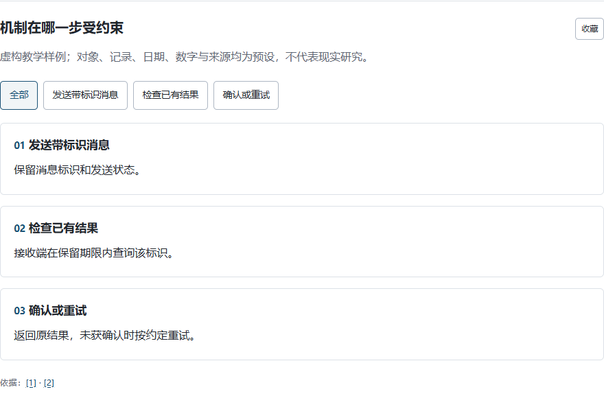
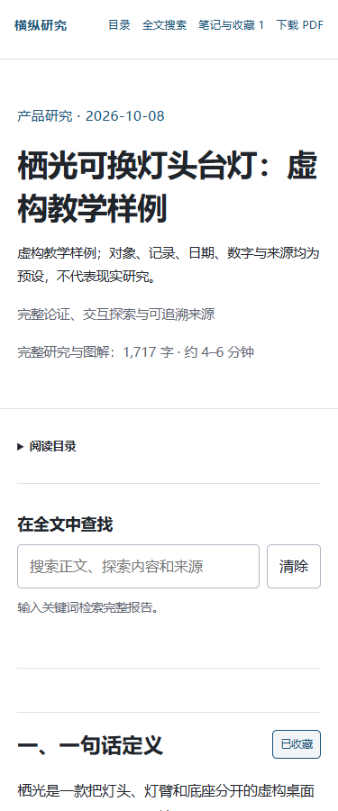

01 / 产品 · 栖光可换灯头台灯
一盏灯，如何被维护？
点选灯头、连接位置和底座，把部件与说明对上；再比较整灯更换与局部维修，调整维护预算。
在完整论证中检视结构、比较选择、逐步理解机制。
同一份研究，既有可交互网页，也有可以安静读完的 PDF。
下面是四份小型虚构教学样例，用于展示真实的阅读与交互功能；对象、数字与材料均为教学设定。正式报告由具体研究问题与实际证据展开。
试着点一个观察位置，切换一个步骤，或调整一个输入。正文和来源就在旁边，随时可以返回连贯阅读。

点选灯头、连接位置和底座，把部件与说明对上；再比较整灯更换与局部维修，调整维护预算。

沿参与者关系理解归还、商户和清洗点如何协作，查看业务序列，切换影响判断的条件。

逐步理解筛查机制，对照支持材料与替代解释；修改通道和缓存输入，观察线性预算怎样改变。

从带标识发送、查询已有结果到确认或重试，逐步看清交换过程；查找术语，并查看参与者依赖。
从目录进入感兴趣的章节，搜索一个概念，沿引用回到资料。把值得记住的内容收藏下来，也可以下载 PDF，继续连贯阅读。
